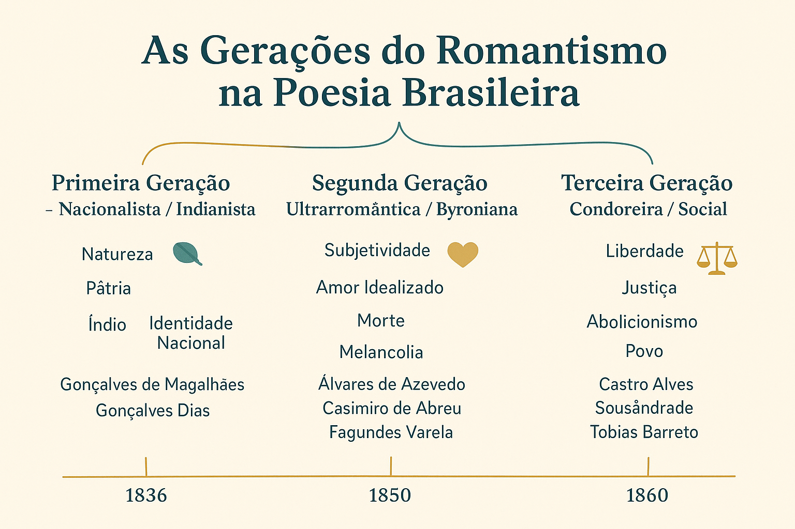

As Gerações do Romantismo na Poesia Brasileira
A poesia foi o primeiro e mais expressivo campo de manifestação do Romantismo no Brasil. Através dos versos, os autores deram voz às emoções individuais, ao amor idealizado, ao sentimento nacional e às lutas sociais do século XIX. Abaixo, as três gerações poéticas são apresentadas de modo didático, com características, autores e trechos representativos.

Primeira Geração Romântica: o nacionalismo e o indianismo
A primeira geração, também chamada de geração nacionalista ou indianista, desenvolveu-se a partir de 1836. Reflete o momento em que o Brasil, recém-independente, buscava construir uma identidade nacional própria. A poesia passou a exaltar a pátria, a natureza e o indígena como símbolos da nação.
Características
- Exaltação da pátria e da natureza;
- Idealização do índio como herói nacional;
- Linguagem grandiosa e patriótica;
- Presença de religiosidade e moralidade cristã.
Autores e obras
Gonçalves de Magalhães — Suspiros Poéticos e Saudades (1836); Gonçalves Dias — versos como Canção do Exílio e I-Juca-Pirama sintetizam o espírito desta fase.
"Minha terra tem palmeiras,
Onde canta o Sabiá;..."
Segunda Geração Romântica: o ultrarromantismo e o mal do século
A segunda geração, conhecida como ultrarromântica ou byroniana (por influência de Lord Byron), destaca-se pela intensificação do sentimentalismo, pela interiorização das emoções e pelo tom melancólico — o chamado "mal do século".
Características
- Subjetivismo e introspecção profunda;
- Idealização da mulher e do amor inatingível;
- Melancolia, tédio e desejo de morte;
- Fuga da realidade por meio de sonhos e fantasia.
Autores e obras
Álvares de Azevedo — Lira dos Vinte Anos, Noite na Taverna; Casimiro de Abreu — Meus Oito Anos; Fagundes Varela — Cântico do Calvário.
"Se eu morresse amanhã, viria ao menos
Fechar meus olhos minha triste irmã;..."
Terceira Geração Romântica: o condoreirismo e o engajamento social
A terceira geração, chamada condoreira ou social, surge na década de 1860 e traz um forte compromisso social. Os poetas passaram a usar a palavra poética como instrumento de denúncia contra injustiças, especialmente a escravidão, e a clamar por liberdade e igualdade.
Características
- Poesia engajada e libertária;
- Temas como escravidão, liberdade e ideais republicanos;
- Linguagem épica e oratória;
- O poeta como voz do povo.
Autores e obras
Castro Alves — O Navio Negreiro, Vozes d'África; Sousândrade — O Guesa Errante; Tobias Barreto — Amor de Maria.
Trecho adaptado de O Navio Negreiro (início):
"Auriverde pendão da minha terra,..."
Conclusão
As três gerações do Romantismo poético brasileiro — nacionalista/indianista, ultrarromântica e condoreira — mostram a evolução da sensibilidade literária e das preocupações sociais do século XIX. Juntas, formam um conjunto que ajudou a moldar a identidade cultural do Brasil e a orientar movimentos literários posteriores.